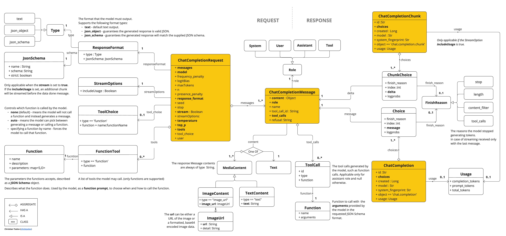

OpenAI聊天 #
Spring AI支持OpenAI的各种人工智能语言模型，OpenAI是ChatGPT背后的公司，该公司创建了行业领先的文本生成模型和嵌入，有助于激发人们对人工智能驱动文本生成的兴趣。
前提条件 #
您需要使用OpenAI创建一个API来访问ChatGPT模型。
export SPRING_AI_OPENAI_API_KEY=<INSERT KEY HERE>
添加存储库和BOM表 #
Spring AI工件发布在Maven Central和Spring Snapshot 存储库中。 为了帮助进行依赖关系管理，Spring AI提供了BOM（物料清单），以确保在整个项目中使用一致版本的Spring AI。请参阅依赖项管理部分，将Spring AI BOM添加到构建系统中。
自动配置 #
Spring AI为OpenAI聊天客户端提供Spring Boot自动配置。
聊天室属性 #
重试属性 #
前缀spring.ai.retry用作属性前缀，允许您为OpenAI聊天模型配置重试机制。
连接属性 #
前缀spring.ai.openai用作允许连接到openai的属性前缀。
配置属性 #
前缀spring.ai.openai.chat是属性前缀，允许您配置openai的聊天模型实现。
运行时选项 #
OpenAiChatOptions.java类提供模型配置，如要使用的模型、温度、频率惩罚等。
启动时，可以使用OpenAiChatModel（api，options）构造函数或spring.ai.openai.chat.options.*属性配置默认选项。
在运行时，可以通过向Prompt调用添加新的特定于请求的选项来覆盖默认选项。
ChatResponse response = chatModel.call(
new Prompt(
"Generate the names of 5 famous pirates.",
OpenAiChatOptions.builder()
.model("gpt-4o")
.temperature(0.4)
.build()
));
函数调用 #
您可以使用OpenAiChatModel注册自定义Java函数，并让OpenAI模型智能地选择输出包含参数的JSON对象，以调用一个或多个已注册的函数。
多模态 #
多模态是指模型同时理解和处理来自各种来源的信息的能力，包括文本、图像、音频和其他数据格式。
愿景 #
提供视觉多模态支持的OpenAI模型包括gpt-4、gpt-4o和gpt-4o-mini。
OpenAI[用户
消息API](
https://platform.openai.com/docs/api-reference/chat/create#chat-create-messages)可以将base64编码图像或图像URL的列表与
消息合并。
下面是摘自
OpenAiChatModelIT.java的代码示例，说明了使用gpt-4o模型将用户文本与图像融合。
var imageResource = new ClassPathResource("/multimodal.test.png");
var userMessage = new UserMessage("Explain what do you see on this picture?",
new Media(MimeTypeUtils.IMAGE_PNG, this.imageResource));
ChatResponse response = chatModel.call(new Prompt(this.userMessage,
OpenAiChatOptions.builder().model(OpenAiApi.ChatModel.GPT_4_O.getValue()).build()));
或使用gpt-4o模型的等效图像URL：
var userMessage = new UserMessage("Explain what do you see on this picture?",
new Media(MimeTypeUtils.IMAGE_PNG,
URI.create("https://docs.spring.io/spring-ai/reference/_images/multimodal.test.png")));
ChatResponse response = chatModel.call(new Prompt(this.userMessage,
OpenAiChatOptions.builder().model(OpenAiApi.ChatModel.GPT_4_O.getValue()).build()));
该示例显示了一个将multimal.test.png图像作为输入的模型：
 以及文本消息“解释您在这张图片上看到了什么？”，并生成如下响应：
以及文本消息“解释您在这张图片上看到了什么？”，并生成如下响应：
音频 #
提供输入
音频多模式支持的OpenAI型号包括gpt-4o-audio-preview。
OpenAI[用户
消息API](
https://platform.openai.com/docs/api-reference/chat/create#chat-create-messages)可以将base64编码音频文件列表与
消息合并。
下面是摘自
OpenAiChatModelIT.java的代码示例，说明了使用gpt-4o-audio-preview模型将用户文本与音频文件融合。
var audioResource = new ClassPathResource("speech1.mp3");
var userMessage = new UserMessage("What is this recording about?",
List.of(new Media(MimeTypeUtils.parseMimeType("audio/mp3"), audioResource)));
ChatResponse response = chatModel.call(new Prompt(List.of(userMessage),
OpenAiChatOptions.builder().model(OpenAiApi.ChatModel.GPT_4_O_AUDIO_PREVIEW).build()));
输出音频 #
提供输入
音频多模式支持的OpenAI型号包括gpt-4o-audio-preview。
OpenAI Assystant Message API可以包含
消息的base64编码音频文件列表。
下面是一个代码示例，说明使用gpt-4o-audio-preview模型的用户文本和音频字节数组的响应：
var userMessage = new UserMessage("Tell me joke about Spring Framework");
ChatResponse response = chatModel.call(new Prompt(List.of(userMessage),
OpenAiChatOptions.builder()
.model(OpenAiApi.ChatModel.GPT_4_O_AUDIO_PREVIEW)
.outputModalities(List.of("text", "audio"))
.outputAudio(new AudioParameters(Voice.ALLOY, AudioResponseFormat.WAV))
.build()));
String text = response.getResult().getOutput().getContent(); // audio transcript
byte[] waveAudio = response.getResult().getOutput().getMedia().get(0).getDataAsByteArray(); // audio data
您必须在OpenAiChatOptions中指定音频模态才能生成音频输出。
结构化输出 #
OpenAI提供定制的 结构化输出API，确保模型生成严格符合所提供的JSON模式的响应。
配置 #
Spring AI允许您使用OpenAiChatOptions构建器以编程方式或通过应用程序属性配置响应格式。
使用聊天选项生成器 #
您可以使用OpenAiChatOptions构建器以编程方式设置响应格式，如下所示：
String jsonSchema = """
{
"type": "object",
"properties": {
"steps": {
"type": "array",
"items": {
"type": "object",
"properties": {
"explanation": { "type": "string" },
"output": { "type": "string" }
},
"required": ["explanation", "output"],
"additionalProperties": false
}
},
"final_answer": { "type": "string" }
},
"required": ["steps", "final_answer"],
"additionalProperties": false
}
""";
Prompt prompt = new Prompt("how can I solve 8x + 7 = -23",
OpenAiChatOptions.builder()
.model(ChatModel.GPT_4_O_MINI)
.responseFormat(new ResponseFormat(ResponseFormat.Type.JSON_SCHEMA, this.jsonSchema))
.build());
ChatResponse response = this.openAiChatModel.call(this.prompt);
与BeanOutputConverter实用程序集成 #
您可以利用现有的BeanOutputConverter实用程序从域对象自动生成JSON架构，然后将结构化响应转换为特定于域的实例：
通过应用程序属性配置 #
或者，当使用OpenAI自动配置时，您可以通过以下应用程序属性配置所需的响应格式：
spring.ai.openai.api-key=YOUR_API_KEY
spring.ai.openai.chat.options.model=gpt-4o-mini
spring.ai.openai.chat.options.response-format.type=JSON_SCHEMA
spring.ai.openai.chat.options.response-format.name=MySchemaName
spring.ai.openai.chat.options.response-format.schema={"type":"object","properties":{"steps":{"type":"array","items":{"type":"object","properties":{"explanation":{"type":"string"},"output":{"type":"string"}},"required":["explanation","output"],"additionalProperties":false}},"final_answer":{"type":"string"}},"required":["steps","final_answer"],"additionalProperties":false}
spring.ai.openai.chat.options.response-format.strict=true
样本控制器 #
创建一个新的SpringBoot项目，并将Springaistarter模型openai添加到pom（或gradle）依赖项中。
在src/main/resources目录下添加application.properties文件，以启用和配置OpenAi聊天模型：
spring.ai.openai.api-key=YOUR_API_KEY
spring.ai.openai.chat.options.model=gpt-4o
spring.ai.openai.chat.options.temperature=0.7
这将创建一个OpenAiChatModel实现，您可以将其注入到类中。
@RestController
public class ChatController {
private final OpenAiChatModel chatModel;
@Autowired
public ChatController(OpenAiChatModel chatModel) {
this.chatModel = chatModel;
}
@GetMapping("/ai/generate")
public Map<String,String> generate(@RequestParam(value = "message", defaultValue = "Tell me a joke") String message) {
return Map.of("generation", this.chatModel.call(message));
}
@GetMapping("/ai/generateStream")
public Flux<ChatResponse> generateStream(@RequestParam(value = "message", defaultValue = "Tell me a joke") String message) {
Prompt prompt = new Prompt(new UserMessage(message));
return this.chatModel.stream(prompt);
}
}
手动配置 #
OpenAiChatModel实现ChatModels和StreamingChatModel.并使用
低级OpenAiApi客户端连接到OpenAI服务。
将spring ai openai依赖项添加到项目的Maven pom.xml文件中：
<dependency>
<groupId>org.springframework.ai</groupId>
<artifactId>spring-ai-openai</artifactId>
</dependency>
或到Gradle build.Gradle构建文件。
dependencies {
implementation 'org.springframework.ai:spring-ai-openai'
}
接下来，创建OpenAiChatModel并将其用于文本生成：
var openAiApi = OpenAiApi.builder()
.apiKey(System.getenv("OPENAI_API_KEY"))
.build();
var openAiChatOptions = OpenAiChatOptions.builder()
.model("gpt-3.5-turbo")
.temperature(0.4)
.maxTokens(200)
.build();
var chatModel = new OpenAiChatModel(this.openAiApi, this.openAiChatOptions);
ChatResponse response = this.chatModel.call(
new Prompt("Generate the names of 5 famous pirates."));
// Or with streaming responses
Flux<ChatResponse> response = this.chatModel.stream(
new Prompt("Generate the names of 5 famous pirates."));
OpenAiChatOptions提供聊天请求的配置信息。
低级OpenAiApi客户端 #
OpenAiApi为
OpenAI聊天API OpenAI Chat API提供了轻量级Java客户端。
下面的类图说明了OpenAiApi聊天接口和构建块：

下面是一个简单的片段，演示如何以编程方式使用API：
OpenAiApi openAiApi = OpenAiApi.builder()
.apiKey(System.getenv("OPENAI_API_KEY"))
.build();
ChatCompletionMessage chatCompletionMessage =
new ChatCompletionMessage("Hello world", Role.USER);
// Sync request
ResponseEntity<ChatCompletion> response = this.openAiApi.chatCompletionEntity(
new ChatCompletionRequest(List.of(this.chatCompletionMessage), "gpt-3.5-turbo", 0.8, false));
// Streaming request
Flux<ChatCompletionChunk> streamResponse = this.openAiApi.chatCompletionStream(
new ChatCompletionRequest(List.of(this.chatCompletionMessage), "gpt-3.5-turbo", 0.8, true));
有关更多信息，请遵循OpenAiApi.java的JavaDoc。
低级API示例 #
- java测试提供了一些如何使用轻量级库的一般示例。
- OpenAiApiToolFunctionCallIT.java测试展示了如何使用低级API调用工具函数。
API密钥管理 #
Spring AI通过ApiKey接口及其实现提供灵活的API密钥管理。默认实现SimpleApiKey适用于大多数用例，但您也可以为更复杂的场景创建自定义实现。
默认配置 #
默认情况下，Spring Boot自动配置将使用Spring.ai.openai.API-key属性创建API密钥bean：
spring.ai.openai.api-key=your-api-key-here
自定义API密钥配置 #
您可以使用构建器模式使用自己的ApiKey实现创建OpenAiApi的自定义实例：
ApiKey customApiKey = new ApiKey() {
@Override
public String getValue() {
// Custom logic to retrieve API key
return "your-api-key-here";
}
};
OpenAiApi openAiApi = OpenAiApi.builder()
.apiKey(customApiKey)
.build();
// Create a chat client with the custom OpenAiApi instance
OpenAiChatClient chatClient = new OpenAiChatClient(openAiApi);
当您需要：
- 从安全密钥存储中检索API密钥
- 动态旋转API键
- 实现自定义API键选择逻辑